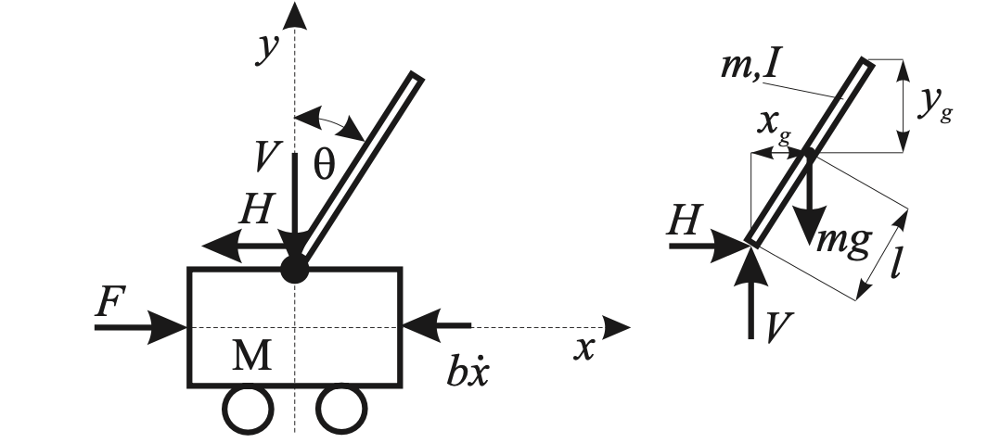

因果和非因果建模
词汇
因果建模 - causal modeling
非因果建模 - acausal modeling
目的
- 理解因果和非因果建模
1 - 传统和面向对象方法
2008年的文章说，因果建模和仿真的代表是Simulink，非因果的是Dymola和Modelica
1.1 - 传统建模方法
写出公式，将拆分系统到块图（block diagram），表达因果，显式表达。
没有面向对象（OO - object oriented），没有复用模型。
将平衡公式写成微分代数系统方程组，手动转化为ODE方程组
1.2 面向对象建模方法
公式以中立形式，不考虑计算顺序 -> 非因果建模。举个电阻的例子，真实情况下我们无法了解到电阻上究竟是电压产生电流还是电流产生电压，所以非因果是更加贴近自然表达的。因果性是人们为了方便而创造的一个概念。
公式以不考虑计算顺序的形式，即非因果模型
2 - 非因果建模的任务
将所有模型方程（model equations）转换到一系列的：
- 垂直排序的：从方程导出的变量
- 水平排序的：所有右手边的变量已经由之前（行）的方程所运算过
2.1 - 面向物理的连接
建模工具会从子模型连接器的定义中生成合适的方程
另一个区别于传统块图的特征是，非因果模型如何进行连接。子模型之间的连接是通过变量进行的。所有的系统，包括子系统都有两种类型的变量，被定义在子系统的连接器中（connector），这两种类型的变量和键合图中的0-和1-节点比较类似：
- 在连接点相同的变量：例如势能、温度、压强
- 在连接点求和为零的变量：例如电流、动能、力
连接器结合，子模型就被连接起来。建模工具会从子模型连接器的定义中生成合适的方程。
2.2 - 面向对象
模型类满足OO，并可以直接由物理法则定义，不需要描述状态空间。
OOP中的封装、继承等特征非常重要。在非因果建模中也是。封装意味着，人们可以在不知道模型实现细节的情况下，通过组合来使用模型。信息细节被隐藏，参考连接器变量就可以写模型（公式），不需要去假设接下来它会如何被连接。继承可以用于在原有类之上衍生出新类等，这样，已有的代码（模型/公式）可以被复用。
从建模人员的角度来看，他们需要将模型构建地尽可能靠近现实模型。在建模语言中，非常重要的是，模型类能够直接被物理法则定义，而不必要对状态空间进行描述（state space description），如\(dx/dt=f(x,t)\)。
例如Modelica中，基本的结构体就是类，包括一些含有约束的类：class, model, block, function, package, type等等。
3 - 例子
3.1 - 数学模型
以下图为例进行建模：
- 双摆的x轴平衡，x方向加速度与小车给的反作用力：\(m\ddot x_g=H\)，其中，\(x_g=x+lsin\theta\)
- 双摆的y轴平衡，y方向的重力加速度和小车给的反作用力：\(m\ddot y_g=V-mg\)，其中，\(y_g=lcos\theta\)
- 双摆的旋转运动平衡：\(I\ddot \theta=VLsin\theta-Hlsin\theta\)
- 小车上的受力平衡，b是阻力：\(M\ddot x+b\dot x=F-H\)

合并以上方程得到系统的数学模型：
\(\begin{cases}(M+m)\ddot x+b \dot x+ml\ddot \theta cos\theta-ml\dot \theta^2sin\theta=F\\(I+ml^2)\ddot \theta +ml\ddot xcos\theta -mglsin\theta =0\end{cases}\)
3.2 - 控制模型
都一样
3.3 - 因果建模(Simulink)
3.4 - 非因果建模(Modelica)
3.5 - 优缺点比较
对比以Simulink为代表的因果模型和以Modelica建模为代表的非因果建模：
因果模型缺点
- 直观性：没有表示物理模型的拓扑结构，无法直接观察小车、双摆、阻尼器等
- 表达性：块有一个唯一的数据流方向，模型中的组件有很多混合表达
- 复用性：：建立的模型只能用于该场景
- 兼容性：与因果模型（如Modelica）不兼容
- 知识成本：需要的知识更多，问题只会由更有经验的研发人员检查出来
- 风险性：代数环（algebraic loop），数值特性不好，有风险，或者只能从代数上消除代数环（Dymola就这么做的）
- 复杂性：图表没有文字描述层，难以处理很复杂的模型系统
非因果模型优点
- 直观性：物理模型和计算器中的模型连接直观透明
- 复用性：所有的组件都可以通过重新配置而重用
- 复杂性：可以处理很复杂的模型
Simulink对比Modelica
- Simulink建模更适合于设计和实现控制模式，因为它有更多的基础组件和工具箱，例如Control System Box，优化工具箱等等。
- Modelica的优势在于，在物理建模时，代数操作的概念和特别定义的连接器带来了许多优势。在教学中更有用，理解库不需要很深的知识。